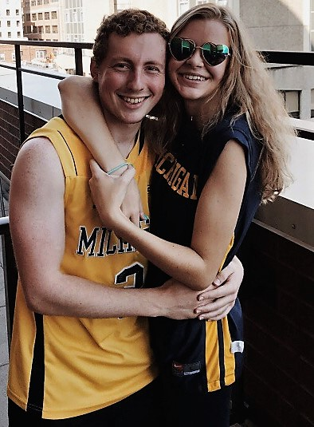

Rachel
I am a senior at the University of Michigan (Ann Arbor) majoring in Information Analysis and minoring in Spanish. After graduation, I will either begin the Masters in Management Program at the Stephen M. Ross School of Business or I will be working full-time in either New York City or Chicago. When I'm not indulging in pizza, I enjoy watching Brooklyn Nine-Nine, going to baseball games, and creating Spotify playlists.

Harry
Harry is a junior at the University of Michigan (Ann Arbor) majoring in Computer Science and minoring in Economics. This summer, he is working for EY in Nashville as a Software Development intern. When he isn't (voluntarily or involuntarily) taking part in my pizza-seeking endeavors, Harry can be found playing Super Smash Bros. Ultimate, watching Black Mirror, or attending a New York Yankees Game.

Alex
Alex graduated from the University of Michigan (Ann Arbor) in 2017 and now works as a full-time software developer in Detroit. Alex likes playing Mario Kart, seeing Broadway musicals, and watching The Good Place.